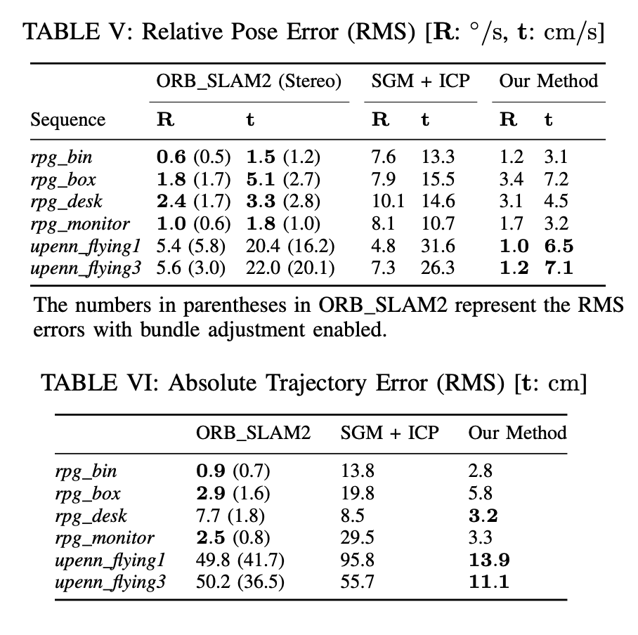

本文由我在 计算机视觉工坊 首发，在我的个人博客转载。
“Event-based Stereo Visual Odometry” 是港科大沈劭劼老师组的一篇新工作。其基于双目的 Event Camera 来实现 Visual Odometry。
Event-based Stereo Visual Odometry 论文阅读
Zhou, Yi, Guillermo Gallego, and Shaojie Shen. “Event-based Stereo Visual Odometry.” arXiv preprint arXiv:2007.15548 (2020).
“Event-based Stereo Visual Odometry” 是港科大沈劭劼老师组的一篇新工作。其基于双目的 Event Camera 来实现 Visual Odometry。
Overview
文章主要贡献：
- 一个基于双目 Event Camera 的 Visual Odometry，
- 提出一种新的基于优化的方法来实现逆深度的估计。
- 基于估计出的逆深度的概率分布，提出一种 fusion 的方式，来提升三维重建的密度和精度。
- 通过 3D-2D 进行 registration 来进行 tracking。
系统概述：
系统流程：
下面从几个主要模块来进行梳理。
Event Representation
使用 Time-surface map (TS) 来表征 Events，从而将时间信息加入了考虑。示意图如下：
即选一个时间点，离当前时刻越近，越亮。计算公式如下：
T(x,t)≐exp(−δt−tlast(x))
可知，其区间为(0,1]，然后将其归一化到[0,255]区间。
一个 TS 图示例如下：
Mapping: Stereo Depth Estimation
Mapping 部分的描述，首先描述了如何对 Event 进行逆深度估计，然后描述了如何进行完整的 semi-dense 的建图。
按照一定的时间频率合成 TS 图，计算每一个 TS 的时间内每一个 event 的逆深度（local depth map），然后选取一个窗口进行合成 semi-dense 的地图。其中，作者提到在实现时，TS 图的合成频率为 100Hz，窗口大小为20。
Inverse Depth Estimation for an Event
首先，如何对一个 Event 进行深度估计的几何示意图：

构造一个 objective function（基于一个event在两个相机中触发时的时间一致性）：
ρ⋆=ρargminC(x,ρ,Tleft(⋅,t),Tright(⋅,t),Tt−δt:t)
其中，ρ⋆≐1/Z⋆ 是左目相机的一个 event: et−ϵ≡(x,t−ϵ,p) (with ϵ∈[0,δt]) 的逆深度；C为：
C(⋯)≐∑x1,i∈W1,x2,i∈W2∥∥∥τleft t(x1,i)−τright t(x2,i)∥∥∥22
其中，
x1=π(ctTct−ϵ⋅π−1(x,ρk))x2=π((rightTleft⋅ctTct−ϵ⋅π−1(x,ρk))
然后对其优化即可。这个优化过程论文中还提到了很多细节，如如何给一个初始化的逆深度等，具体请见论文。也就是说，进行逆深度估计的算法流程为：
Semi-Dense Reconstruction
作者首先拟合出前面步骤估计出的逆深度的概率分布，然后推导出一种两个概率分布 fusion 后进行更新的方式，最后提出 fusion 的策略。
首先，根据上文通过优化方式计算出逆深度的过程，以及根据实验数据，拟合出逆深度服从 Student’s t-distribution。一些详细的数学解释请见原论文。
在一些数据集中，拟合出的参数：
有了上述的概率分布，这个时候就可以在前面的逆深度估计的优化函数中再加入一些 tricks，以来增强其鲁棒性质，具体请见原论文与引用。
有了概率分布，就可以进行两个之间的 fusion 了。见论文公式12a-12d。
假设有一个先验 St(μa,sa,νa)，测量值St(μb,sb,νb)，则更新：
ν′μs2ν=min(νa,νb)=sa2+sb2sa2μb+sb2μa=ν′+1ν′+sa2+sb2(μa−μb)2⋅sa2+sb2sa2sb2=ν′+1
有了以上的基础，为了得到更为稠密的地图，将多个已估计出逆深度的 TS 进行 fusion 的操作。Fusion 的策略如下图所示：

检查是否进行 replace/remain 的操作的判断方法如下：
μb−2⋅σb≤μa≤μb+2⋅σb
其中，
σb=sbνb/(νb−2)
至此，建出一个semi-dense的map的步骤就结束了。
Camera Tracking
进行 Tracking 部分的主要思想是，首先每一个 event 对应的 camera 的 pose 都可能是不同的，但其实无需在这个时间分辨率上做，按照 TS 的频率来即可。然后通过将 TS 与 深度图进行 align 即可。
那公式来表征：
θ⋆=θargminx∈SrefF∑(τˉleftFk(W(x,ρ;θ)))2
其中，θ 即为要估计出的位姿。
W(x,ρ;θ)≐πleft(T(πref−1(x,ρ),G(θ)))
G(θ):R6→SE(3)
这也就是常见的图像 align 的操作。然后更进一步，将 θ 改为增量式的（具体见论文公式17-18）：
F(Δθ)≐x∈SFref∑(τˉleftFk(W(W(x,ρ;Δθ);θ)))2
W(x,ρ;θ)←W(x,ρ;θ)∘W(x,ρ;Δθ)
作者在实验过程中测试了这个 Objective function 的优化，效果可见还不错：
Experimental
作者做了丰富大量的实验，以及算法中是否加一些 trick 的对比。这里截取一些：

